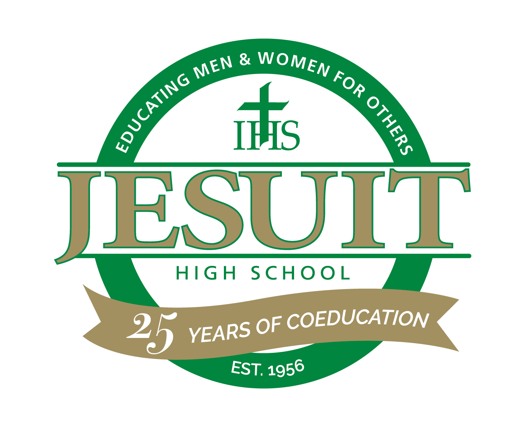

Education

For four years of my life I went to a High School in Beaverton Oregon, known as Jesuit High School. Jesuit is a private catholic high school of about 1000 teens. Jesuit is known for many things, its athletic department, and its education system. But one thing that I always participated in was technical theatre.
I graduated High School in June of 2017. Since than I have been going to Portland Community College the Rock Creek Campus for the past 1 1/2 years.
I took a couple computer science classes in the last year. I took a little c++ and a little python. In the past 1 1/2 years I have gotten most my pre-requisites done and when done with Epicodus I plan to go to a 4-year college!
Why I'm Here

The Main reason I am hear is because I want to see if I actually want to do computer science as my career choice in life. So far its looking good!!